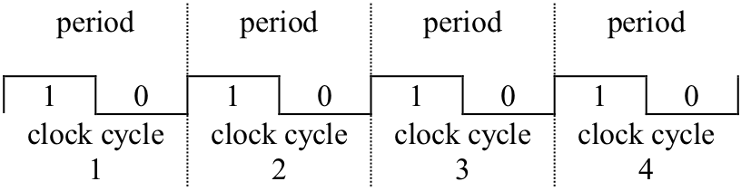
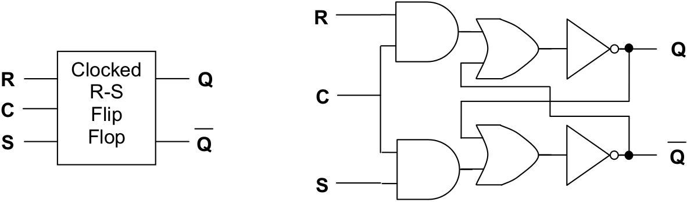

A clock is a device that generates a signal that periodically cycles between a high state, “1”, and a low state, “0”. Clocks ensure that the operations performed by a computer proceed in an orderly manner. They do so by enabling certain operations to occur only at specific points in time.
Clocks divide time into “cycles” that consist of two phases, a high phase and a low phase. Specifically, a clock cycle is defined as the interval of time beginning when the clock goes to a high state, lasting through the return to a low state, and ending with the start of the transition back to the high state again. illustrates four complete cycles of a clock.
Each clock cycle lasts for only a brief instant of time. The CPU of a modern PC, for example, runs at billions of clock cycles per second, or gigahertz. The clock speeds of other components, such as the system bus, are usually somewhat slower, but still in the range of hundreds of millions of clock cycles per second, or megahertz. The various operations that a computer can perform require one or more clock cycles to complete. The exact number of cycles depends upon the complexity of the particular operation.
As described in the previous section, flip-flops can be used to implement the most basic unit of storage, the bit. Memory devices based on R-S flip-flops perform read operations by retrieving the contents of the Q outputs of a number of selected bits. The write operation, in turn, stores bit patterns into memory by placing 1’s on either the S (set) or R (reset) inputs of various bits.
The clock ensures that these operations happen in an orderly manner. During one phase of the clock cycle (e.g., low) the contents of memory can be examined but not modified. During the opposite phase of the cycle (e.g., high) the contents of memory can be updated. This sort of timing is critical for the reliable operation of a computer, since among other things, it allows time after a “write” operation for the flip-flops to settle into their stable configurations before “read” operations can be attempted.
Four cycles of a clock
A clocked R-S flip-flop
presents the circuit diagram of a clocked R-S flip-flop. In addition to the R (reset) and S (set) inputs, these circuits also receive the clock signal. In the clocked R-S flip-flop the Q output will be unaffected by any change in R or S as long as the clock (C) is “0” (low). That is, during the “read” phase of the clock cycle the contents of memory cannot be changed. When the clock input goes to “1” (high), designating the “write” phase of the clock cycle, the Q output will change depending upon the values of R and S.
Exercises for
Develop a truth table for the clocked R-S flip-flop.